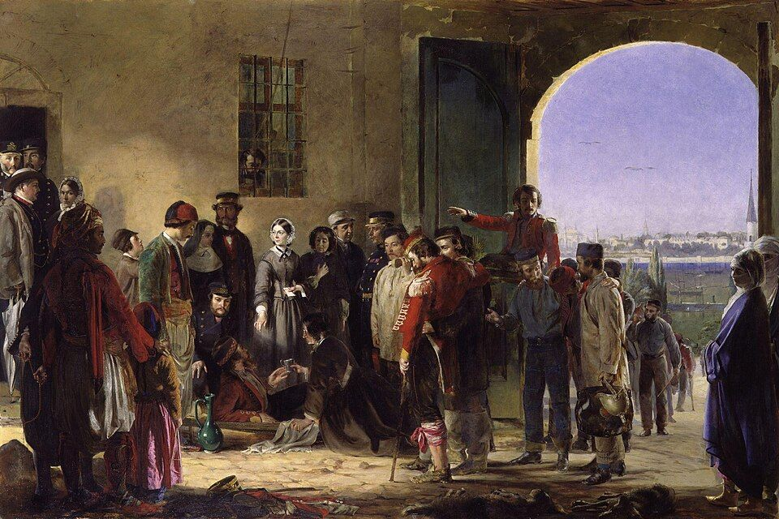
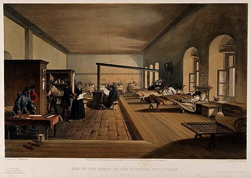
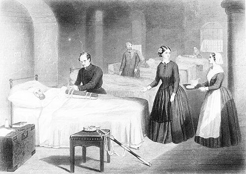
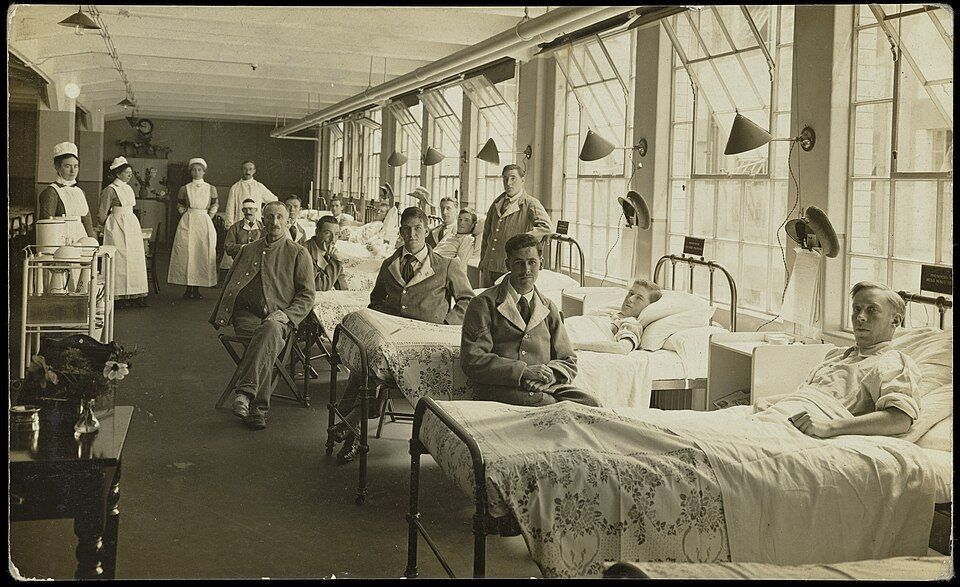
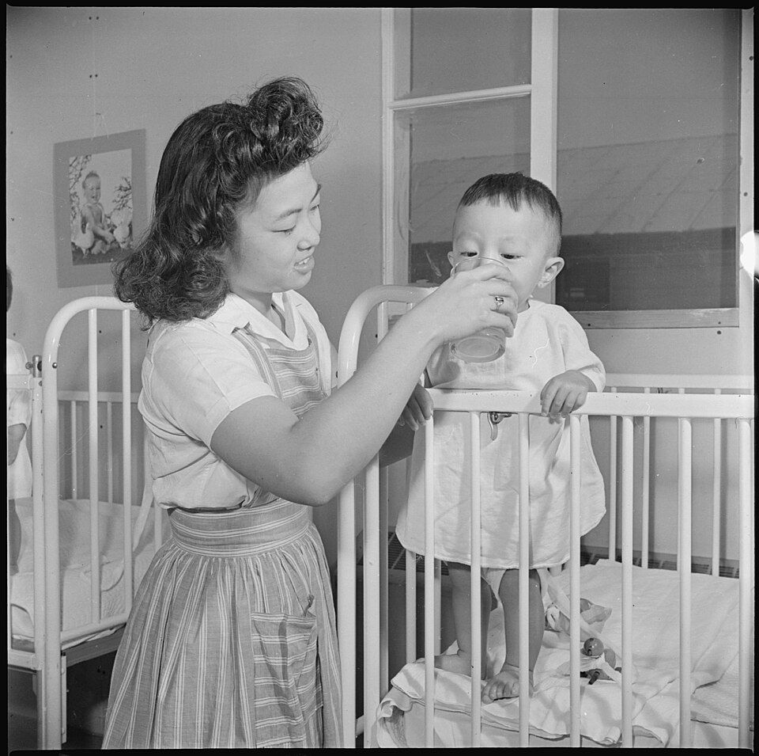

Cuidar también tiene historia
De los cuidados en casa y en los hospitales medievales a la universidad y la investigación. Elige una época.


De oficio a profesión
Las guerras y las epidemias dejan claro que cuidar exige formación. Nacen las primeras escuelas, los registros de pacientes y la idea de que la higiene salva vidas.
- 1847Semmelweis demuestra que lavarse las manos reduce la fiebre puerperal.
- 1854Florence Nightingale y Mary Seacole atienden a los heridos de Crimea.
- 1860Se abre en Londres la Nightingale Training School.
- 1896Federico Rubio funda en Madrid la Escuela de Santa Isabel de Hungría.
Vidas que dejaron huella
Cuidó a los niños que llevaron la vacuna de la viruela a América y Filipinas en la Real Expedición Filantrópica (1803–1806). Se la considera la primera enfermera de la historia en una misión internacional de salud pública.
Enfermera jamaicana que atendió a soldados heridos en la guerra de Crimea con sus propios medios.
Reformó los hospitales con estadística e higiene y abrió en 1860 la primera escuela laica de enfermería. El 12 de mayo, su nacimiento, es el Día Internacional de la Enfermería.
Cirujano que fundó en Madrid en 1896 la Escuela de Santa Isabel de Hungría, la primera escuela de enfermeras de España.
Definió las 14 necesidades básicas que aún se usan para valorar a la persona.
Puso la relación entre enfermera y paciente en el centro del cuidado, sobre todo en salud mental.








Técnicas que evolucionan
Higiene de manos
Heridas
Temperatura
Registros
Las técnicas antiguas se explican como historia, no como instrucciones para hoy.
Fuentes
- Ministerio de Sanidad. Materiales sobre la Real Expedición Filantrópica de la Vacuna (1803–1806) y la figura de Isabel Zendal.
- Las imágenes proceden de Wikimedia Commons; el autor y la licencia figuran bajo cada una.
- Nightingale F. Notes on Nursing. Londres; 1859.
- Hernández Martín F (coord.). Historia de la enfermería en España. Madrid: Síntesis; 1996.
- Real Orden de 7 de mayo de 1915, por la que se aprueba el programa de conocimientos para habilitar de enfermeras. Gaceta de Madrid, 1915.
- Decreto de 4 de diciembre de 1953 por el que se unifican los estudios de las profesiones de auxiliares sanitarios. BOE de 29 de diciembre de 1953.
- Real Decreto 2128/1977, de 23 de julio, sobre integración en la Universidad de las Escuelas de Ayudantes Técnicos Sanitarios como Escuelas Universitarias de Enfermería. boe.es
- Decisión n.º 1194/2007/CE y Reglamento (CE) n.º 1907/2006 (REACH): restricción de la comercialización de termómetros de mercurio desde abril de 2009.